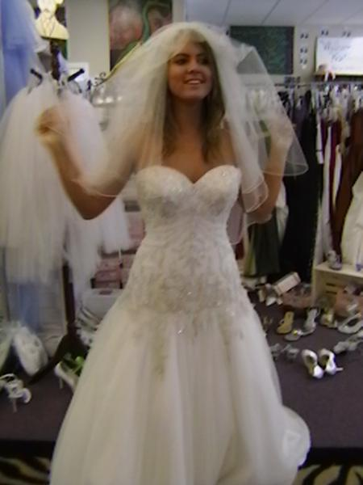
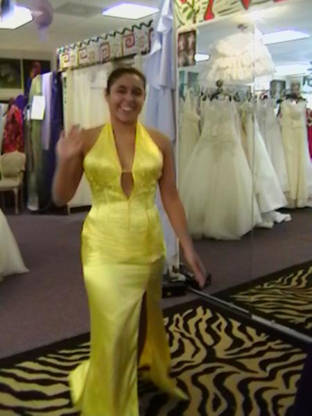

Yvette's ~*
in the Original Texts with English Translations of Mrs. Mary P. Merrifield's Medieval and Renaissance Treatises on the Arts of Painting it is revealed that Painter's Chroniclers such as Vasari mention that Great Masters viz., Bellino, Rubens & Titian employed the method of chiaroscuro using grey for preparation to paint the flesh tints when the chiaroscuro had been painted with black, but that when the chiaroscuro was of a rich brown, it was necessary to interpose grey tints between the shades and flesh tints. Often, when the flesh tints were made more rosy than nature, the flesh tints were laid on very thinly. The order was to begin with the lights then proceed gradually into the shades with deeper and redder tints. Vasari also mentions that Pietro Perugino had laid three coats of color on some Paintings in the Church of the Servi at Florence. Vasari mentions this incidentally and certainly doesn't mean to imply that the number of coats of color were limited to three. Titian is said to have repeated his colors nine or ten times; the same has been said of Correggio. Some sources even report that Lely said he believed Vandyck had painted over a Portrait fourteen times. Since the white ground of the canvas can be seen through such thin glazes, this is a method of Painting which keeps the flesh light and clear ~* This method of Painting involves the use of asphaltum, mummy and the smoke of pece Greca to generate the depths and transparencies of the shadows. It appears to have been followed by the Florentine, the Roman, The Lombard, the early Bolognese and the early Venetian schools. It is known that Titian's earliest Pictures were Painted in this manner, and the process may be seen on some unfinished Paintings by Rubens, Vandyck, Fra Bartolomeo and others. The beauty of this method of Painting is in its transparency, every color laid so thin as to show those laid beneath. It should be noted that the most perfect Drawing is necessary when Paintings are carried out in this manner, because the lines and shades of the Drawing will be visible where only light tints are laid over and this will cause the color to appear opaque. An unfinished Painting by Lionardo Da Vinci in the Gallery of Brera shows that it was not always customary to complete the chiaroscuro before beginning the Painting. In this Painting, some parts of Picture are finished, or nearly so, while other parts of the ground are left white. the Great Master Lionardo mentions this technique in his Trattato Della Pittura. Vasari shows that the black used by Lionardo was the lamp black used by the Printers, and ivory black. Maestro Lionardo , in his Precept for the Painter ( # 352): Of the Judgment to be made of a Painter's Work, directly refers to this method of Painting: ~~~~~~~~ { The first thing to be considered is, whether the figures have their proper relief, according to their respective situations, and the light they are in: that the shadows be not the same at the extremities of the groups, as in the middle; because being surround by shadows, or shaded only on one side, produces very different effects. The groups in the middle are surrounded by shadows from the other figures, which are between them and the light. Those which are at the extremitites have the shadows only on one side, and receive the light on the other. The strongest and smartest touches of shadows are to be in the interstice between the figures of the principal group where the light cannot penetrate ~* } ~~~~~~~~~~~~~~~~~~~~~ Thank you, each and every one, for visiting Yvette's and Sleuthing, with me, the Mysteries of Portrait Painting ~* one Mystery of Portrait Painting is figuring out how to do it in the first place ~* Perhaps another Mystery of Portrait Painting has something to do with excellence in the Human Form; or perhaps honor for the efforts of all Noble Human Endeavor ~* it's just so easy to feel that there is some underlying message contained in the Mysterious Mystique of Oil Portraits from Ages gone by ~* maybe the age of the Portraits themselves is a Mystery ? Whatever the Mysteries are, we shall continue, as time carries us through the days and nights of our lives, to pursue together the Secret Coded Encrypted Ciphered Messages left to us by the Great Master Portrait Painters of Ancient Times, Medieval & Renaissance ~* |
 |
 |
 |
 |
 |
 |
| Yvette's ~* |
| Established 1980 |
| Yvette's has a Passion for Fashion !! ~* |
| Thank you for visiting |




| Yvette's treasures the opportunity to serve you ~* |